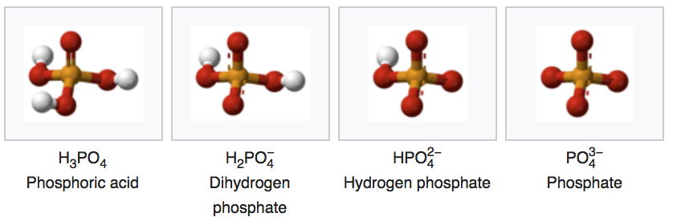

Chapter 3 BAE 204 Glossary
This glossary is meant to assemble terms that we routinely use in Environmental Sciences and Engineering and which are expected to be mastered by students taking BAE 204 at NC State university. They are ordered in alphabetical list for better retrieval and look up.
3.1 A
3.1.1 Aerobic respiration
3.1.3 Ammonia
- Ammonia is a colorless gas with a characteristic pungent smell
- Formula: \(NH_3\)
- Ammonia 3D shape:

- Lewis dot structure:

- Number of electron N has for itself following electronegativity rule: eight
- \(NH_3\) can only be an electron donor
- Because N has so many electrons to be potentially donated, ammonia is generally unstable in an aerobic environment. As a result, it tends to trace quantities in nature
- When dissolved in water, and depending on the pH of the solution, ammonia converts to ammonium following the reaction:
\[ H_2O + NH_3 \rightleftharpoons OH^{-} + NH_4^{+} \]
- Production:
- Because of its many uses, ammonia is one of the most highly produced inorganic chemicals. Dozens of chemical plants worldwide produce ammonia. Consuming more than 1% of all man-made power, ammonia production is a significant component of the world energy budget.
- In 2014, about 88% of the ammonia produced was used for fertilizing agricultural crops
Modern ammonia-producing plants generally depend on the Haber-Bosch process which consists into reducing dinitrogen into ammonia
\[ 3\,H_2 + N_2 \to 2\,NH_3 \]
- Consumption:
- Ammonia is directly or indirectly the precursor to most nitrogen-containing compounds. Virtually all synthetic nitrogen compounds are derived from ammonia.
3.1.4 Ammonium
- Ammonium is the most reduced inorganic nitrogenous cation (positively charged).
- Ammonium 3D shape:

- Lewis dot structure:

- Number of electron N has for itself following electronegativity rule: eight
- It is formed by the protonation of ammonia following the reaction:
- The relative abundance of ammonium vs ammonia depends on the pH of the solution. See figure below
- Because in most natural aqueous environments, pH is below 8, ammonium tends to be the preponderant form.
- Production:
- In nature, ammonium is a waste product of the mineralization of organic molecules
- It is added as fertilizer on soils as ammonium nitrate
- Health hazard:
- Ammonia vapor has a sharp, irritating, pungent odor that acts as a warning of potentially dangerous exposure
- Exposure to very high concentrations of gaseous ammonia can result in lung damage and death
- Drinking water standard:
3.1.5 Ammonium nitrate
- Ammonium nitrate is a chemical compound, the nitrate salt of the ammonium cation
- It is a white crystal solid and is highly soluble in water.
- Formula: \(NH_4NO_3\)
- 3D shape:

- It is predominantly used in agriculture as a high-nitrogen fertilizer
Its other major use is as a component of explosive mixtures used in mining, quarrying, and civil construction
- Production:
- Ammonium nitrate does exist naturally in mines of the Atacama desert in Chile but globally nearly all ammonium nitrate is now produced synthetically
- Byproduct of all respiration processes. Ammonium ions are a waste product of the metabolism of animals. In fish and aquatic invertebrates, it is excreted directly into the water. In mammals, sharks, and amphibians, it is converted in the urea cycle to urea, because urea is less toxic and can be stored more efficiently. In birds, reptiles, and terrestrial snails, metabolic ammonium is converted into uric acid, which is solid and can therefore be excreted with minimal water loss.
- Consumption/utilization:
- It is used as a fertilizer, because it tends to release inorganic nitrogen slowly in soil. Applied as a surface fertilizer, it penetrates the soil with rainfall infiltration. Highly soluble, the nitrate anion becomes readily available to plant roots, although it is susceptible to leaching below the root system into the shallow and deep groundwater. The ammonium cation tends to adsorb to soil particles and is thus not as susceptible to leaching. Ammonium can be directly uptaken by plant roots, which thermodynamically makes sense, although because in most soils aerobic conditions are preponderant, nitrate tends to be the ion uptaken most often. Soil bacteria in the aerobic zone of the soil will oxidize adsorbed ammonium into nitrate, which then becomes available for plant roots. The whole chain of events slows the release of inorganic nitrogen to crops and thus makes for more effective fertilizers.
- Health hazard
- No direct known health hazard
3.1.6 Anoxic waters
- Anoxic waters are areas of sea water, fresh water, or groundwater that are depleted of dissolved oxygen and are a more severe condition of hypoxia (Wikipedia)
- Anoxic waters result from an IMBALANCE between oxygen supply and demand
3.2 C
3.2.1 Carbon dioxide
- Carbon dioxide is a colorless gas which density is 50% higher than that of dry air.
- Formula: \(CO_2\)
- Carbon dioxide 3D shape:
- Lewis dot structure:
- Number of electron C has for itself following electronegativity rule: zero
\(CO_2\) can only be an electron acceptor
- Production:
- oxidation of C in all organic molecules
- Almost all respiratory processes on earth (some respiration does not involve oxidation of C)
- Combustion of all Carbon-based fuel
- Consumption:
- Photosynthesis
- Atmospheric carbon dioxide is the primary carbon source for life on Earth
- Calcite precipitation in the oceans
- Photosynthesis
- Ecological Significance:
- Greenhouse Gas, which serves as reference for all other GHG
- Concentration in the atmosphere ~380 ppm on the rise, or 0.38%, or a partial pressure of 0.38 atm

Carbon Dioxide variations through ancient and modern times
In reality, concentrations are not stable, and vary widely in time and in space at the next two videos nicely show.
The next one results from the model simulations
- The following one is the combination of both models and observations
Youtube video of \(CO_2\) modeled and observed seasonal variations
3.2.2 Carbonates
- After carbon dioxide dissolves in water, it will combine with water to form carbonic acid (\(H_2CO_3\)).
- Carbonate serves as the carbon source for aquatic vegetation
- Carbonic acid can then dissociate into bicarbonate (\(HCO_3^-\)) and carbonate (\(CO_3^{2-}\))
\tag{$pK_A$ = 3.6} \tag{$pK_A$ = 6.35}
- In an environment not open to the atmosphere (or where direct exchange with the atmosphere is very limited like in stream or wetland sediment), the preponderant form depends on the pH and can be calculated as illustrated on the graph below.
- In sea water, Carbonate can combine with \(Ca^{2+}\) to form Calcium Carbonate (\(CaCO_3\)), which precipitates out of solution. In other words, calcium carbonate formation is a sink for carbonate, and ultimately from \(CO_2\) addition from the atmosphere to to increased \(CO_2\) concentrations in the atmosphere.
- Carbonates are thus a great pH buffer in aquatic environments
3.4 E
3.4.1 Eutrophication
- Definitions:
- ‘an increase in the rate of supply of organic matter to an ecosystem’ (Nixon 1995)
- ‘is the enrichment of a water body with nutrients, usually with an excess amount of nutrients’ (Wikipedia)
- ‘the enrichment of water by nutrients, especially nitrogen and/or phosphorus, causing an accelerated growth of algae and higher forms of plant life to produce an undesirable disturbance to the balance of organisms present in the water and to the quality of water concerned’ (Anonymous 1991b)
- ‘the enrichment of water by nitrogen compounds causing an accelerated growth of algae and higher forms of plant life to produce an undesirable disturbance to the balance of organisms present in the water and to the quality of water concerned’ (Anonymous 1991a)
3.5 G
3.5.1 Greenhouse gases (GHG)
A greenhouse gas is a gas in an atmosphere that absorbs and emits radiant energy within the thermal infrared range. This process is the fundamental cause of the greenhouse effect. The primary greenhouse gases in Earth’s atmosphere are water vapor, carbon dioxide, methane, nitrous oxide, and ozone. Without greenhouse gases, the average temperature of Earth’s surface would be about −18 °C (0 °F), rather than the present average of 15 °C (59 °F). In the Solar System, the atmospheres of Venus, Mars and Titan also contain gases that cause a greenhouse effect. (Wikipedia)
3.6 H
3.6.2 Hydrogen Sulfide
- It is a colorless gas with the characteristic foul odor of rotten eggs.
- It is very poisonous, corrosive, flammable and acidic in nature.
- Formula: \(H_2S\)
- hydrogen sulfide #D shape:

- Lewis dot structure:

- Number of electron S has for itself following electronegativity rule: eight
- \(H_2S\) can only be an electron donor
- Unstable under aerobic conditions, will readily be oxidized into sulfate
- \(H_2S\) is a polyprotic acid which can lose up to 2 protons in water, depending on the pH.
- The figure below suggests that at pH found in most streams (4.5 to 8), \(H_2S\) is either preponderant or corresponds to at least 20% of all sulfide forms. \(H_2S\) being a highly volatile product, it explains why we can easily smell and detect it in most conditions in streams.
- Production:
- Hydrogen sulfide often results from the microbial breakdown, or mineralization, of organic matter in anaerobic conditions, such as may exist in swamps and sewers. When happening in sediment, this is referred to as sediment diagenesis
- Consumption:
3.7 L
3.8 M
3.8.1 Methane
- Under normal conditions for temperature and pressure, methane is a colorless, odorless gas main constituent of natural gas, and the simplest alkane
- Formula: \(CH_4\)
- Methane 3D shape:

- Lewis dot structure of methane:

- Number of electron C has for itself following electronegativity rule: eight
- \(CH_4\) can only be an electron donor
- Because methane has so many electrons to give, it will easily ‘burn’ in normal atmosphere (provided that ignition T°C be reached, e.g., by a spark), liberating large quantities of heat (55.5 MJ/kg). The electrons are transferred from the carbon to the oxygen atoms following two redox half-reactions to obtain the overall reaction:
Production:
Consumption:
Ecological significance:

- Health effects:
3.9 N
3.9.1 Nitrate
- Nitrate is the stable inorganic nitrogenous anion in oxidized water
- Formula: \(NO_3^{-}\)
- Nitrate 3D shape:

- Lewis dot structure of nitrate:

- Number of electron N has for itself following electronegativity rule: zero
- \(NO_3^{-}\) can only be an electron acceptor
\(NO_3^{-}\) is technically the conjugate base of nitric acid \(HNO_3\), but the \(pk_A\) of the reaction is at a theoretical pH of -1.38. In other words, for the pH of most natural waters (4.5 < pH < 8), \(HNO_3\) is totally insignificant.
- Production:
- from the complete oxidation of inorganic nitrogenous molecules which include ammonia, ammonium, nitrite
- from the mineralization and complete oxidation of amine radicals in organic molecules
- Consumption:
- Uptake from microbes, plants, and algae for their anabolism, which consists in building complex organic molecules from inorganic ones.
- Uptake, assimilation, anabolism, immobilization are all synonymous terms to express the fact that the N atom is immobilized, at least temporarily in organic molecules.
- Because N is assimilated in organic molecules during uptake/anabolism, and because N gains electrons in the process (it is thus reduced), we refer to nitrate uptake as assimilatory nitrate reduction.
- Denitrification: under anaerobic conditions, nitrate is used by facultative anaerobes as electron acceptor to generate ATP in their respiration chain. The two major end products of denitrification are gases, namely dinitrogen (\(N_2\)) and nitrous oxide (\(N_2O\)), which leave the aqueous environment. As such, nitrate is not assimilated by any bacteria and denitrification is therefore, as opposed to uptake, referred to as **dissimilatory nitrate reduction into dinitrogen (\(N_2\)) and nitrous oxide (\(N_2O\)).
- Uptake from microbes, plants, and algae for their anabolism, which consists in building complex organic molecules from inorganic ones.
- Ecological significance:
- Because of assimilation and denitrification processes, the overall nitrate concentrations in rivers tends to diminish from the catchment headwaters to the receiving bodies such as estuaries and coastal areas. As a result, inorganic nitrogen has naturally been in very short supply in these coastal water bodies, and nitrate and traditionally been the nutrient limiting aquatic productivity there. Very much like with phosphate, algae have adapted to be able to grow in very low concentrations. Anthropogenic activities, and agriculture in particular, have largely increased the loads and concentration of nitrate reaching estuaries, to the point where nitrate is no longer the limiting factor. As a result, excess nitrate is one of the reasons for the global and persistent presence of algal blooms in estuaries and coastal waters.
- Health hazard:
- There is a heated debate about the health hazard that nitrate might pose. Some argue that if anything, there might be beneficial effects, while others argue that there are evidence of cancers linked to excess nitrate absorption. Unfortunately, arguments on both sides might not be totally independent of militantism and lobbies.
- The only consensus everybody seems to agree upon is the Blue Baby syndrome, or methemoglobinemia. Methemoglobinemia is an unusual and potentially fatal condition in which hemoglobin is oxidized to methemoglobin and loses its ability to bind and transport oxygen, hence the cyanosis (blue appearance) usually visible on fingers, toes, and lips. Nitrate reduced to nitrite in the body of humans and animals enters the body stream where it seems to directly oxidize oxyhemoglobin to methemoglobin-peroxide complex.
Picture of a Blue Baby from syndromespedia.com/blue-baby-syndrome.html
- Drinking water standards
- Although there is still a heated debate whether or not nitrate does have have detrimental health effects, the World Health Organization has provided maximum concentration guidelines of 50 mg/L as nitrate (World Health Organization 2011). These guidelines have been enacted in hard laws in the US and in Europe. The 50 mg/L as nitrate equates 11.2 mg \(NO_3\)-N/L and in the US, the drinking water standard is 10 mg \(NO_3\)-N/L.
3.9.2 Nitrous Oxide
- Commonly known as laughing gas
- Nitrous oxide has significant medical uses, especially in surgery and dentistry, for its anesthetic and pain reducing effects.
- Formula: \(N_2O\)
- Nitrous Oxide 3D shape:


- Number of electron N has for itself following electronegativity rule:
- the first one on the left has 5
- the middle N has 3
\(N_2O\) can be both an electron acceptor and an electron donor
- Production:
- \(N_2O\) is produced due to bacterial processes (over 90%) and anthropogenic processes such as burning of fossil fuel
- The two main bacterial processes are nitrification and denitrification
- Accounting that human activities have enhanced both nitrification and denitrification processes, it is estimated that overall, about 2/3rd of \(N_2O\) production is natural, and about 1/3rd is human enhanced
- \(N_2O\) is produced due to bacterial processes (over 90%) and anthropogenic processes such as burning of fossil fuel
- Consumption:
- Because of all the electrons stored on the two N atoms (5 + 3 = 8), nitrous oxide is a potential electron donor and bacteria can use it for their respiration processes
- Ecological significance:
- Powerful Greenhouse Gas, 298 times that of \(CO_2\) (EPA)
Concentration in the atmosphere ~0.0003 ppm or ~325 ppb on the rise

3.10 O
3.10.1 Oligotrophication
- ‘a decrease in the rate of supply of organic matter to an ecosystem’ (Nixon 2009)
3.11 P
3.11.1 Phosphate
- Phosphate is an inorganic chemical and a salt-forming anion of phosphoric acid
- Formula: \(PO_4^{3-}\)

- Phosphate is one of the anions of the polyprotic acid (i.e., which can liberate several protons \(H^{+}\))
- The conjugate bases of phosphate are: 
- All conjugate bases are related through the set acid-base chemical equilibria:
- The preponderant form of phosphate in a solution also depends on the pH following this relationship:
- Production:
- Phosphorus in general and phosphate in practice has remained one of the nutrients limiting the most plant productivity on our planet
- Phosphates are the naturally occurring form of the element phosphorus, found in many phosphate minerals
- Phosphate minerals are mined to obtain phosphorus for use in agriculture and industry
- The largest global producer and exporter of phosphates is Morocco.
- Within North America, the largest deposits lie in the Bone Valley region of central Florida, the Soda Springs region of southeastern Idaho, and the coast of North Carolina (near Aurora).
- Consumption:
- Uptake from all primary producer including plants and algae
- Phosphate can also be immobilized by bacteria
- In food industry, phosphates help baked goods rise, they act as emulsifiers in processed cheese and canned soup, they add flavor to cola and color to frozen french fries. They also can be added to meat, poultry and seafood to help the protein bind more water, making it juicier after freezing and reheating.
- Ecological significance:
- Phosphorus as phosphate naturally is the most limiting factor for primary productivity for land and aquatic plants. Because it tends to bind to particles, phosphates have accumulated with sediment particularly in coastal areas, where phosphate can become available again to algae through sediment diagenetic processes. As a result, phosphate is generally not considered the most limiting factor for algae in estuaries and coastal environment. However, it does tend to be the limiting nutrient in freshwater receiving bodies such as lakes and reservoirs.
- Excess phosphate in freshwater receiving bodies has been shown to be the nutrient causing some major eutrophication problems throughout the planet
3.12 S
3.12.1 Sulfate
- Sulfate is the inorganic sulfur anion stable in oxidized water
- Formula: \(SO_4^{2-}\)
- Sulfate 3D shape:

- Lewis dot structure of nitrate:
- Number of electron S has for itself following electronegativity rule: zero
- \(SO_4^{2-}\) can only be an electron acceptor
- \(SO_4^{2-}\) is the conjugate base of Hydrogen sulfate \(HSO_4^{-}\). The figure below shows that for pH normally measured in surface water and streams (4.5-8), \(SO_4^{2-}\) is the truly preponderant form. We therefore generally omit to mention \(HSO_4^{-}\) as a chemical form that plays any significant role.

During their anabolism, primary producers uptake sulfate, but the sulfur atoms can be incorporated into amino-acids only after sulfur has been reduced, or gained 8 electrons to be in a thiol (\(-SH\)) form.
Production:
Consumption:
Ecological significance:
Health effects:
References
Nixon, Scott W. 1995. “Coastal Marine Eutrophication: A Definition, Social Causes, and Future Concerns.” Ophelia 41 (1). Taylor & Francis: 199–219. doi:10.1080/00785236.1995.10422044.
Anonymous. 1991b. “Council Directive of 21 May 1991 Concerning Urban Waste Water Treatment (91/271/EEC). L 135.” Official Journal of the European Communities 30 (5): 40–52. http://eur-lex.europa.eu/legal-content/EN/TXT/PDF/?uri=CELEX:31991L0271&from=EN.
Anonymous. 1991a. “COUNCIL DIRECTIVE of 12 December 1991 Concerning the Protection of Waters Against Pollution Caused by Nitrates from Agricultural Sources (91 / 676 /EEC).” Official Journal of the European Communities 31 (12): 1–8. http://eur-lex.europa.eu/legal-content/EN/TXT/PDF/?uri=CELEX:31991L0676&from=EN.
World Health Organization. 2011. “Nitrate and Nitrite in Drinking-Water Background Document for Development of WHO Guidelines for Drinking-Water Quality.” http://www.who.int/water_sanitation_health/dwq/chemicals/nitratenitrite2ndadd.pdf.
Nixon, Scott W. 2009. “Eutrophication and the Macroscope.” Journal of Hydrobiologia 629 (1): 5–19. doi:10.1007/s1070-00-59-z.